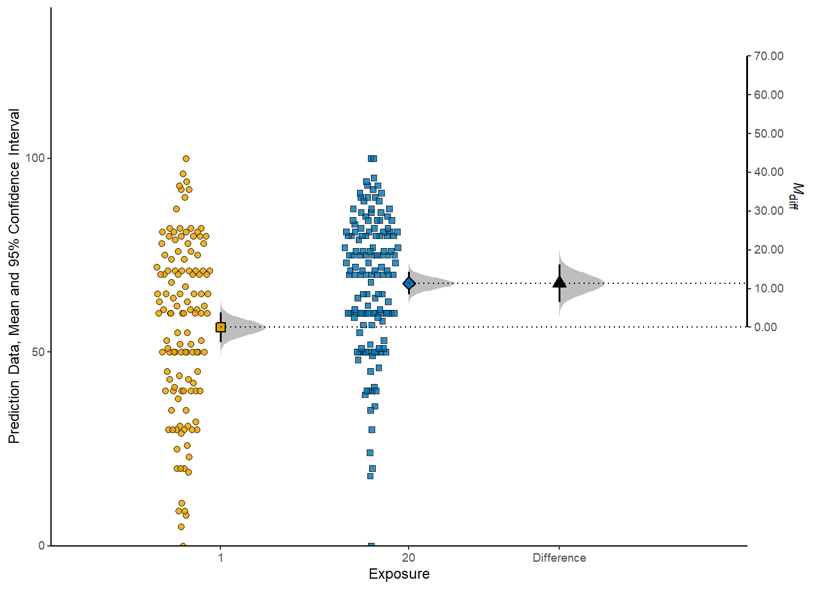

esci provides student-friendly tools for estimation statistics:
- effect sizes with confidence intervals for many research designs
- meta-analysis
- visualizations emphasizing effect sizes and uncertainty
- strong hypothesis testing with interval nulls
esci is both an R package and a module in jamovi. If you’re looking for the R package, stay here. If you want esci in jamovi, download and install jamovi and then use the module library to add esci.
Leave comments, bug reports, suggestions, and questions about esci here
esci is still under development; expect breaking changes in the future especially for the visualization functions. If you need production-ready estimation, turn to statpsych
esci is built on top of statpsych and metafor. That is, almost all of the statistical calculations are passed off to these packages. The only exception is for confidence intervals for Cohen’s d (see documentation). Why does esci exist, then?
- To provide a design-based approach; each function in esci is for one type of research design (e.g. two groups with a continuous variable); it provides all the effect sizes relevant to that design in one convenient function (e.g. mean difference, cohen’s d, median difference, ratio of means, ratio of medians).
- To make visualization easier; esci provides visualizations that emphasize effect sizes and uncertainty
- To integrate with GUIs for students; esci integrates into jamovi and integration into JASP is planned.
The visualizations produced by esci are exquisite in a large part because of the lovely ggdist package by Matthew Kay.
Installation
Assuming submission to CRAN goes well, you will be able to install esci with:
install.packages("esci")Or, get the stable branch directly from github
# install.packages("devtools")
devtools::install_github('rcalinjageman/esci')Or, try out the development branch:
# install.packages("devtools")
devtools::install_github('rcalinjageman/esci', branch = "development")Roadmap
- Finish writing documentation and tests
- Review all functions for consistency of parameter names and returned object names
- Rewrite visualization functions completely to remove clunky approaches to the difference axis and other issues
- Complete JASP integration
- Rewrite jamovi integration
- Add prediction intervals for basic designs
- Repeated measures with 1 IV and multiple groups
- Fully within-subjects 2x2 design
- Arbitrarily complex designs
Example
library(esci)
data("data_penlaptop1")
estimate <- estimate_mdiff_two(data_penlaptop1, transcription, condition)
plot_mdiff(estimate)